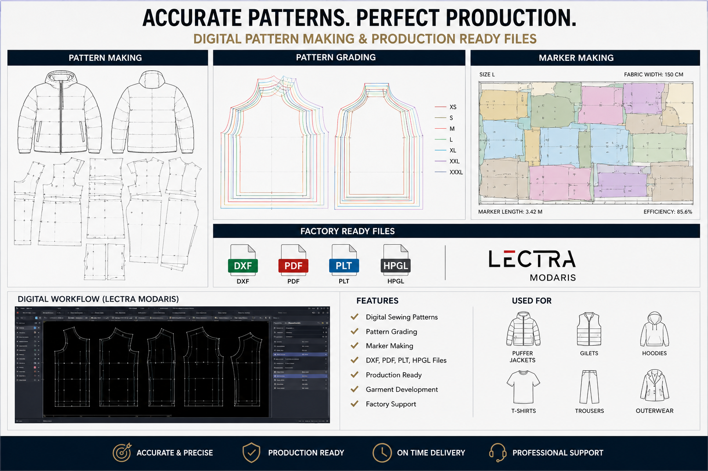
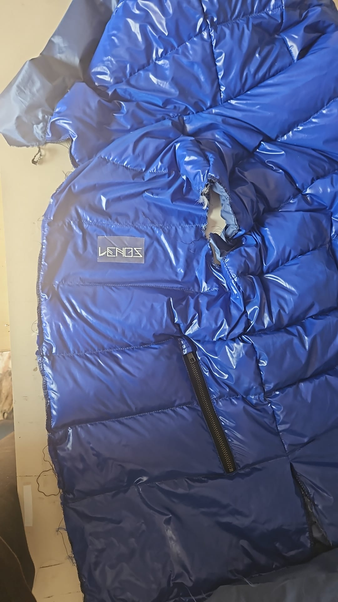

01 — Menswear Print Development
Exploring contemporary menswear graphics, surface patterns and colour stories.
Contemporary textile concepts, print development and garment design.
VIEW COLLECTIONExploring contemporary menswear graphics, surface patterns and colour stories.

Combining print design with functional menswear garments and premium outerwear concepts.

Development of patterns, textures and fabric applications for fashion collections.

Research, moodboards and creative direction translated into wearable menswear ideas.
I am a menswear designer focused on print development, textile concepts and garment creation. My approach combines creativity, technical understanding and awareness of the manufacturing process.
Interested in my work?
Email: your.email@example.com
CV available on request